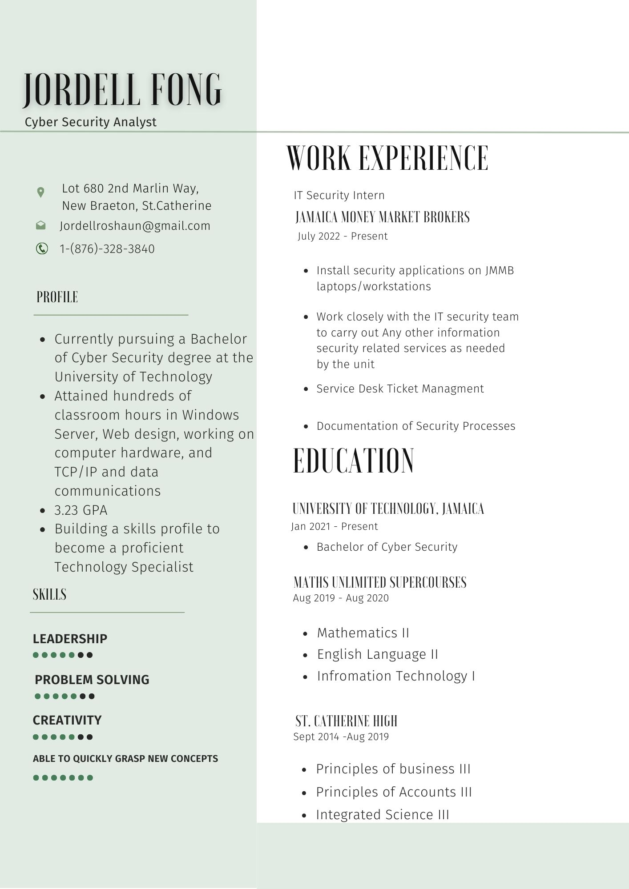

Resume
Please see my resume:
Vision Statement
To become a well-respected security analyst known for anticipating cyber risks and neutralizing threats, helping organizations stay secure while driving security awareness across the industry.
Mission Statement
To continuously improve my knowledge and skills in cybersecurity, delivering insightful analysis of threats while contributing to the development of strong security protocols that keep data and systems safe.
Job Requirements and Qualifications
A Security Analyst’s job is to ensure that an organization’s information systems are protected. Here are some common requirements and qualifications:
Job Requirements
- Bachelor's degree in Computer Science, IT, or related field
- Experience with security tools, software development, and analysis techniques
- Excellent problem-solving skills and clear communication abilities
- Ability to work in collaborative environments with cross-functional teams
Qualifications
- Over 2 years of experience working in IT security at JMMB
- Hands-on experience with deployments, troubleshooting, and managing service desk tickets
- Familiarity with penetration testing methods, threat detection, and vulnerability management
- Understanding of firewalls, IDS/IPS systems, antivirus solutions, and SIEM tools